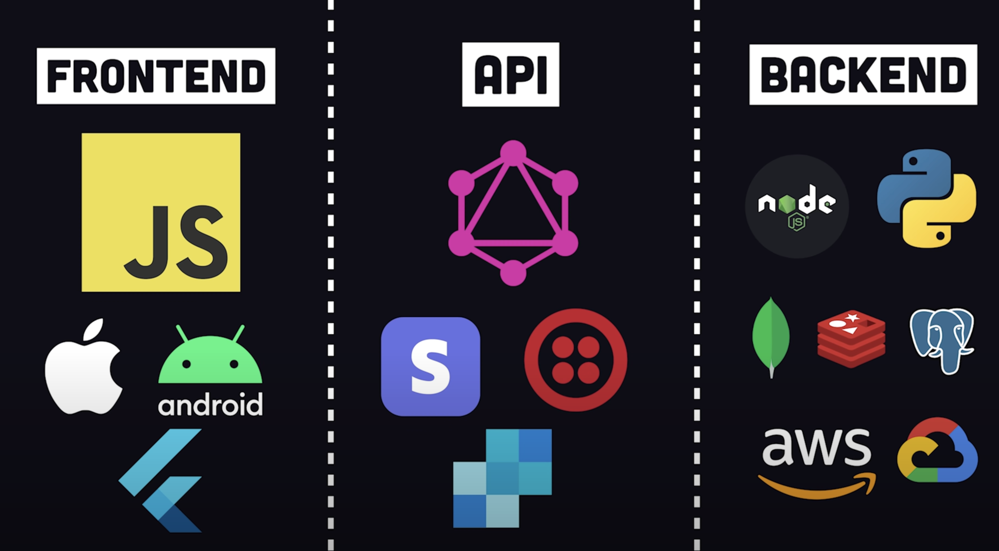

Projects get complex & teams grow
Modern Tech Stack
Image Credits: FireShip How to OVER Engineer a Website
API Layer
Image Credits: FireShip How to OVER Engineer a Website

Twitter:
- @dani_akash_
- @wundergraphcom
Projects get complex & teams grow